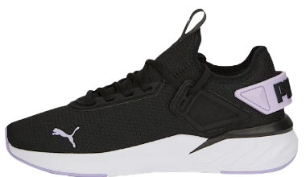
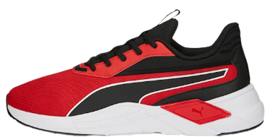

| Puma es una empresa alemana de ropa deportiva que diseña, desarrolla y vende calzado, ropa y accesorios deportivos. La compañía fue fundada en 1948 por Rudolf Dassler, hermano del fundador de Adidas, y tiene su sede en Herzogenaurach, Alemania. |
|  Puma Amare $1,799 |
Puma es una marca de ropa deportiva alemana que se especializa en la fabricación de calzado, ropa y accesorios para deportes como fútbol, running, entrenamiento y golf. Puma es conocida por su estilo innovador y su tecnología avanzada de calzado. |  BMW M Motorsport Roma Via $2,399 |
Estos sneakers están diseñados para combinar el estilo y la funcionalidad de los automóviles de carreras de BMW con la comodidad y el rendimiento de los sneakers de Puma. Los sneakers BMW M Motorsport suelen tener una combinación de colores negro, blanco y azul, con detalles en rojo, amarillo o verde. |
 Deviate NITRO Elite 2 $4,599 |
Los sneakers Deviate NITRO Elite 2 son un modelo de zapatillas para correr diseñado por la marca Puma. Estas zapatillas cuentan con varias características innovadoras que las hacen ideales para corredores de alto rendimiento. |  ForeverRun NITRO $3,299 |
Los sneakers ForeverRun NITRO son un tipo de calzado deportivo diseñado para brindar un alto nivel de comodidad, amortiguación y rendimiento durante la carrera. Estos sneakers están fabricados con una combinación de materiales de alta calidad. |
 Fuse 2.0 Tiger Camo $2,599 |
Los sneakers son un tipo de calzado deportivo muy popular que se utiliza para diversas actividades físicas y de moda. Además, el término "camo" se refiere a un patrón de camuflaje que se utiliza comúnmente en ropa y calzado. |  FUTURE ULTIMATE CREATIVITY $5,199 |
Los Puma Future Ultimate Creativity son un modelo de zapatos de fútbol diseñados para brindar comodidad y rendimiento en el campo de juego. Están hechos con una parte superior sintética flexible que se adapta a la forma del pie para un ajuste cómodo y seguro. |
 FUTURE ULTIMATE DNA $5,,499 |
Los Puma FUTURE ULTIMATE DNA son un tipo de zapatillas deportivas diseñadas por la marca Puma. |  FUTURE ULTIMATE $3,170 |
Los Puma FUTURE ULTIMATE son un modelo de zapatillas de fútbol de alto rendimiento diseñado para brindar comodidad, soporte y agilidad en el campo de juego. |
|  Puma Lex $1,899 |
Puma trae los tenis de entrenamiento Lex para mujer con gran funcionalidad para las rutinas más exigentes. |  AMG Petronas Motorsport RS-X $2,999 |
AMG Petronas Motorsport RS-X es una línea de zapatillas deportivas inspirada en el equipo de carreras de Fórmula 1 Mercedes-AMG Petronas Motorsport. Estas zapatillas son fabricadas por PUMA, una marca deportiva reconocida mundialmente. |
 Porsche Legacy RS-X $2,999 |
Los Puma Porsche Legacy RS-X son un modelo de zapatillas deportivas diseñado en colaboración entre las marcas Puma y Porsche. Están inspirados en los icónicos autos de carreras Porsche 911 y combinan la tecnología de calzado de alto rendimiento de Puma con el diseño elegante y deportivo de Porsche. |  Scuderia Ferrari Slipstream $2,699 |
Los Puma Scuderia Ferrari Slipstream son un tipo de zapatillas deportivas de edición limitada creadas por Puma en colaboración con la icónica escudería italiana de carreras de automóviles, Ferrari. |